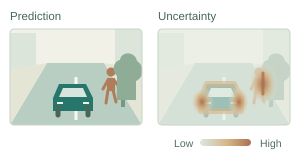
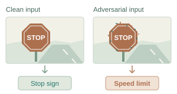
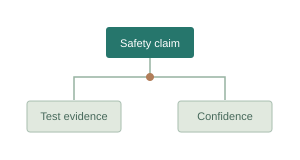

Research
Uncertainty & Evidential Reasoning
Representing, quantifying, and reasoning about evidential uncertainty to identify unreliable perception and hallucinations in visual and multimodal models.
View related papers
Adversarial Robustness & Model Security
Investigating transferable attacks, foundation model failures, and vision-language model jailbreaking to understand the security boundaries of intelligent models.
View related papers
Intelligent System Testing & Assurance
Connecting model-level uncertainty with system-level safety through intelligent system testing, safety cases, and confidence assessment for rail and autonomous systems.
View related papers